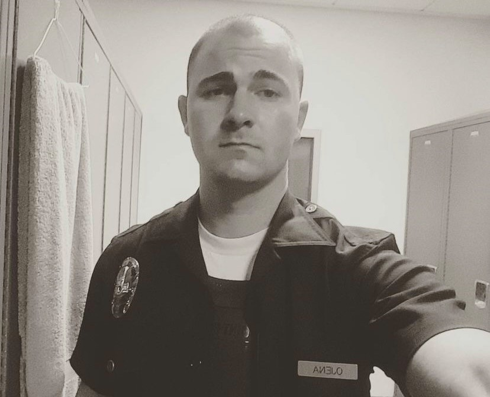

What do officers look for and when do they decide to issue a ticket?
I had the oppourtunity to have an exlusive interview with an LAPD officer This is the highly decorated LAPD officer Preston Ojena
If you are thinking about speeding, here is what officer Ojena has to say

do not speed. If your are reckless and slam your brakes, I wil give you a ticket. If you are having a DUI I will arrest you, however if you are driving distracted i will gently allow you to go with a warning.
here is an example of what not to do